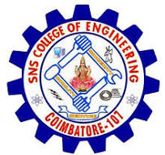
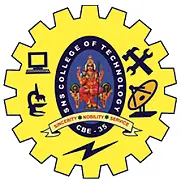

SNS INSTITUTION
It is a self-financing, co-educational, college and performs its academic duties with a motto of Sincerity, Nobility and Service (SNS).
SNS COLLEGE OF ENGINEERING
SNS College of Engineering (Autonomous) is a multi- disciplinary global institution established in the year 2007, is affiliated to Anna University, Chennai and approved by AICTE, New Delhi. Since the inception, SNSCE has reformed and refined the boundaries of intellectual and creative thoughts as a pre-eminent academic center.
>SNS COLLEGE OF TECHNOLOGY
SNS College of Technology is one among the premiere institutes in Coimbatore, Tamil Nadu, India. It was established in 2002 as part of the SNS Groups. The college is approved by AICTE and affiliated to the Anna University, Coimbatore. Anna University, Chennai confirmed the conferment of Autonomous status to SNS College of Technology for a period of 10 years with effect from 2018–19 to 2027–28. SNS College of Technology is Accredited by 'NAAC' with the highest A++ Grade and SNS had started to follow a new education strategy called design thinking which has 5 elements. SNS College of Technology was founded in 2002 and has been administered and run by Sri. SNS Charitable Trust. The institution was established with the permission of the Government of Tamil Nadu and recognized by UGC. It is a self-financing, co-educational, college and performs its academic duties with a motto of Sincerity, Nobility and Service (SNS)
LOGINHOME
LEARN MORE
CONTACT US